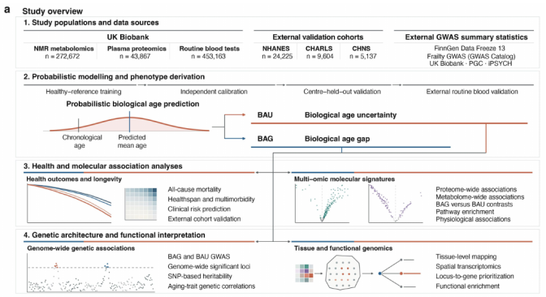
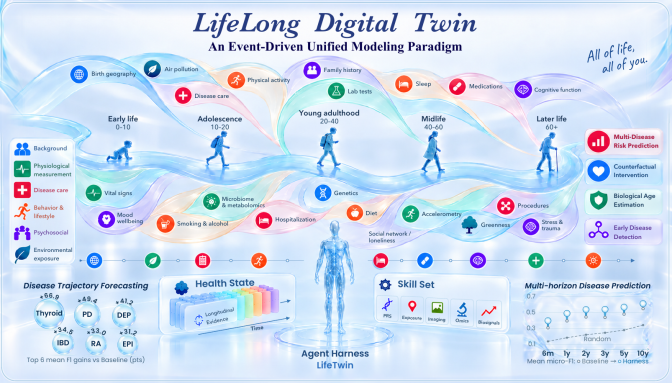
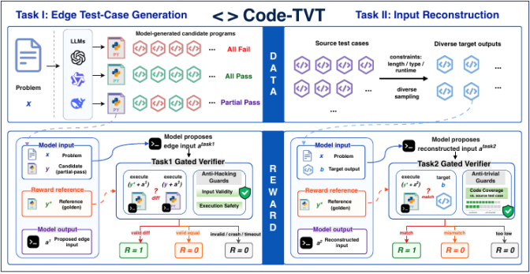
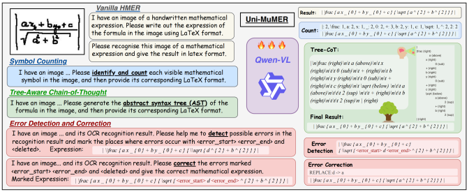
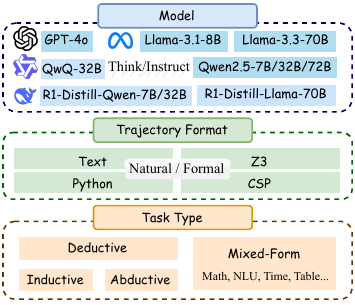
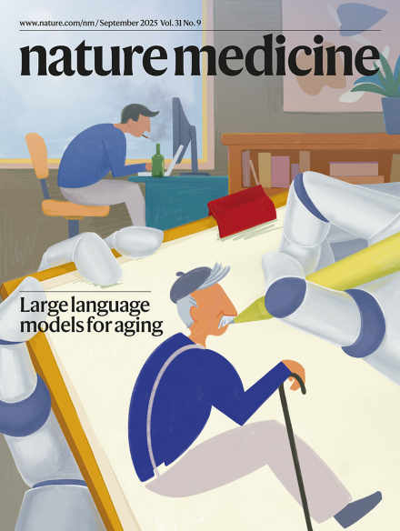
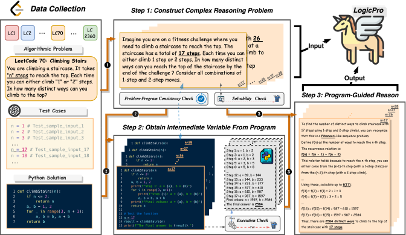

LLM Reasoning
Learning and evaluating logical, mathematical, and code reasoning, from individual steps to long-horizon thinking.
- Learning & evaluation
- LogicPro FormalEval Code-TVT
- Long-horizon thinking
- InftyThink InftyThink+
Peking University
You can call me Justin. I am a Ph.D. student at Peking University, advised by Prof. Liangcai Gao. My earlier work focused on LLM reasoning, and my recent focus is multimodal agentic coding.
Multimodal Agentic Coding: I see visual feedback as a way to ground coding in a perception–action loop, expanding the range of tasks agents can tackle. By orchestrating models as tools, agents can extend their capabilities and improve productivity. My long-term vision is for coding agents to bridge the digital and physical worlds, scale to more complex tasks and environments, and advance toward physical AGI.
I love digitizing and documenting all aspects of my life, especially my health information. I am also very interested in AI for Health.
Learning and evaluating logical, mathematical, and code reasoning, from individual steps to long-horizon thinking.
Modeling biological aging and its uncertainty, lifelong health trajectories, and reasoning over personal health histories.
Visual feedback and model orchestration for building, verifying, and improving across digital and physical worlds.
—
Research Intern · Peking University
—
LLM Reasoning · Data Synthesis
—
Code Data Synthesis · Trajectory Analysis
* denotes equal contribution.
Biological age uncertainty as a complementary measure of aging and future healthspan.
This study models biological age as a probability distribution, distinguishing its mean deviation from its uncertainty. Across metabolomic, proteomic, and routine blood profiles, greater uncertainty was associated with disagreement among aging signals and with subsequent mortality, healthspan loss, and multimorbidity beyond the biological age gap. External cohorts and molecular and genetic analyses examine the robustness and biological context of this measure.
@article{li2026biological,
title = {Biological age uncertainty reveals discordant aging and predicts human healthspan},
author = {Li, Yanjun and Feng, Guoqing and Yan, Shouyi and Huang, Qi and Jiang, Jin and Wang, Yufei and Pei, Zeyuan and Tay, Lyn Xuan and Li, Keliang and Pan, Zean and Yuan, Zhichao and Gao, Liangcai and Ji, John S. and Ke, Limei and Gu, Kuiying and Di, Qian},
journal = {medRxiv},
year = {2026},
doi = {10.64898/2026.09.26.26364091},
url = {https://www.medrxiv.org/content/10.64898/2026.09.26.26364091v3},
note = {Preprint, version 3}
}

Connecting life events, longitudinal health context, and multimodal agents.
LifeLong Digital Twin organizes events into daily health states and accumulates them into lifelong context. An accompanying agent harness brings multimodal evidence into health reasoning. The technical report evaluates language models on disease trajectory forecasting, risk ranking, and prediction across multiple time horizons.
@misc{jiang2026lifelong,
title = {LifeLong Digital Twin: A Unified Modeling Paradigm and Agent Harness for Event-Driven Lifelong Health State Trajectories},
author = {Jiang, Jin and Yates, Sean and Chong, Jasper and Brooks, Raymond and Lawson, Alex and Qin, Yuqin and Gao, Liangcai},
year = {2026},
eprint = {2610.05566},
archivePrefix = {arXiv},
primaryClass = {cs.AI},
url = {https://arxiv.org/abs/2610.05566}
}

Turning program test cases into new, execution-verifiable learning tasks.
Code-TVT reformulates existing test cases into two complementary tasks: generating inputs that distinguish correct and incorrect programs, and reconstructing inputs from program outputs. Execution-based verifiers provide training signals for code reasoning and reinforcement learning.
@inproceedings{jiang-etal-2026-code,
title = "Code-{TVT}: Synthesizing Test-Case-Driven Verifiable Tasks for Code Reinforcement Learning",
author = "Jiang, Jin and
Zhang, Junlong and
Yan, Yuchen and
Zhao, Ze and
Zhou, Changzhi and
Zheng, Suncong and
Gao, Liangcai",
editor = "Lee, Hung-Yi and
Dev, Sunipa and
Li, Junyi Jessy and
Elliott, Desmond",
booktitle = "Proceedings of the 2026 Conference on Empirical Methods in Natural Language Processing",
month = oct,
year = "2026",
address = "Budapest, Hungary",
publisher = "Association for Computational Linguistics",
url = "https://aclanthology.org/2026.emnlp-main.1574/",
doi = "10.18653/2026.emnlp-main.1574",
pages = "35842--35865",
ISBN = "979-8-89176-459-0"
}

A unified vision-language approach to handwritten mathematical expressions.
Uni-MuMER adapts a vision-language model to handwritten mathematical expression recognition through three complementary tasks: tree-aware chain-of-thought, error-driven learning, and symbol counting. The method combines structural reasoning and domain-specific supervision in one model.
@inproceedings{li2025unimumer,
title = {Uni-MuMER: Unified Multi-Task Fine-Tuning of Vision-Language Model for Handwritten Mathematical Expression Recognition},
author = {Li, Yu and Jiang, Jin and Zhu, Jianhua and Peng, Shuai and Wei, Baole and Zhou, Yuxuan and Gao, Liangcai},
booktitle = {Advances in Neural Information Processing Systems},
volume = {38},
year = {2025},
url = {https://proceedings.neurips.cc/paper_files/paper/2025/hash/bb992de895e886c2be79985835cb0ea4-Abstract-Conference.html}
}

Evaluating logical reasoning across models, tasks, and formal languages.
FormalEval examines logical reasoning along three dimensions: the model, the task, and the format of the reasoning trajectory. It compares natural-language and formal-language reasoning, studies their limitations, and investigates how training data transfers between formats.
@inproceedings{jiang2025formal,
title = {Do Large Language Models Excel in Complex Logical Reasoning with Formal Language?},
author = {Jiang, Jin and Wang, Jianing and Yan, Yuchen and Liu, Yang and Zhu, Jianhua and Zhang, Mengdi and Gao, Liangcai},
booktitle = {Proceedings of the 2025 Conference on Empirical Methods in Natural Language Processing},
pages = {16878--16903},
year = {2025},
doi = {10.18653/v1/2025.emnlp-main.855},
url = {https://aclanthology.org/2025.emnlp-main.855/}
}

Estimating overall and organ-specific aging from health examination reports.
This work uses large language models to estimate biological age from health examination reports. Evaluation across six population cohorts studies overall and organ-specific aging, associations with health outcomes, and changes over time.
@article{li2025biological,
title = {Large language model-based biological age prediction in large-scale populations},
author = {Li, Yanjun and Huang, Qi and Jiang, Jin and Du, Xusheng and Xiang, Wenxin and Zhang, Shiqi and Pan, Zean and Zhao, Liyuan and Cui, Yuyan and Ke, Limei and Yin, Bo and Liu, Linfeng and Feng, Guoqing and Yan, Shouyi and Gao, Liangcai and Liu, Yang and Yuan, Yujuan and Guo, Yanying and Yang, Yuqing and Ma, Weizhi and Yang, Yining and Di, Qian},
journal = {Nature Medicine},
volume = {31},
pages = {2977--2990},
year = {2025},
doi = {10.1038/s41591-025-03856-8}
}

Synthesizing logical reasoning data with guidance from program execution.
LogicPro builds reasoning problems from algorithmic questions and test cases. Program solutions supply reference answers and intermediate values, which guide the construction of natural-language reasoning traces. This creates scalable supervision for complex logical reasoning.
@inproceedings{jiang2025logicpro,
title = {LogicPro: Improving Complex Logical Reasoning via Program-Guided Learning},
author = {Jiang, Jin and Yan, Yuchen and Liu, Yang and Wang, Jianing and Peng, Shuai and Cai, Xunliang and Cao, Yixin and Zhang, Mengdi and Gao, Liangcai},
booktitle = {Proceedings of the 63rd Annual Meeting of the Association for Computational Linguistics (Volume 1: Long Papers)},
pages = {26200--26218},
year = {2025},
doi = {10.18653/v1/2025.acl-long.1270},
url = {https://aclanthology.org/2025.acl-long.1270/}
}

Around the world